Front Seat-Back Cover Replacement
Front Seat-back Cover Replacement2-door
SRS components are located in this area. Review the SRS component locations and the precautions and procedures before doing repairs or service.
- Check the operation of the driver's seat position sensor after any of these actions:
- Driver's seat position sensor replacement
- Cover plate (front side of driver's seat slide rail) replacement
- Calibrate the ODS unit after any of the these actions:
- Front passenger's seat replacement (including any seat components)
- Replacement of the seat weight sensors
- After a vehicle collision
NOTE:
- Take care not to tear the seams of damage the seat covers.
- On the passenger's seat, do not touch the ODS sensor in the seat-back pad, and keep it away from oil. Oil can corrode the sensor causing it to fail.
- Put on gloves to protect your hands.
1. Remove the front seat.
2. Remove the head restraint.
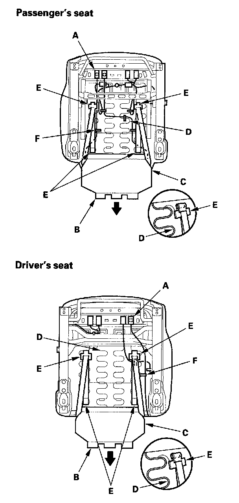
3. From under the seat cushion, disconnect and detach the side airbag connector (A).
4. Release the hook (B) and seat cushion cover (C) from the seat cushion frame spring (D), then pull the cover back and release the hooks (E). Remove the wire ties (F).
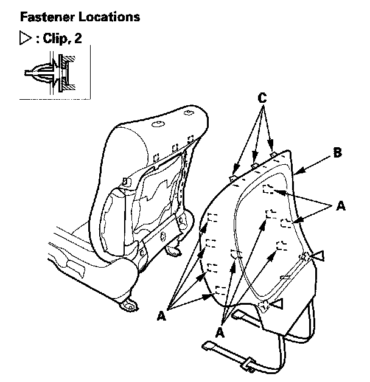
5. Detach the clips and hooks (A) by pulling the bottom of the back cover (B) back, then gently pull down the cover to release the hooks (C) from the seat frame, and remove the panel.
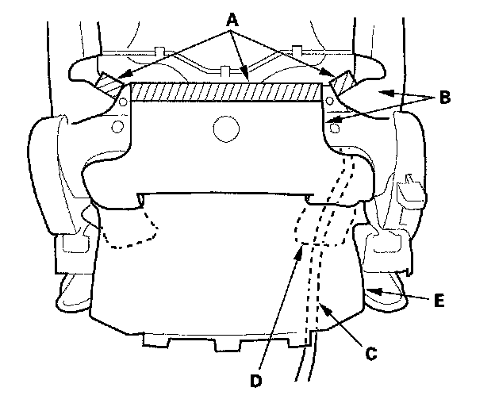
6. Release the hook strips (A), then loosen the seat- back cover (B). Pull the side airbag harness (C) with harness guides (D) out through holes in the seat cushion cover (E). Passenger's seat is shown; driver's seat is similar.
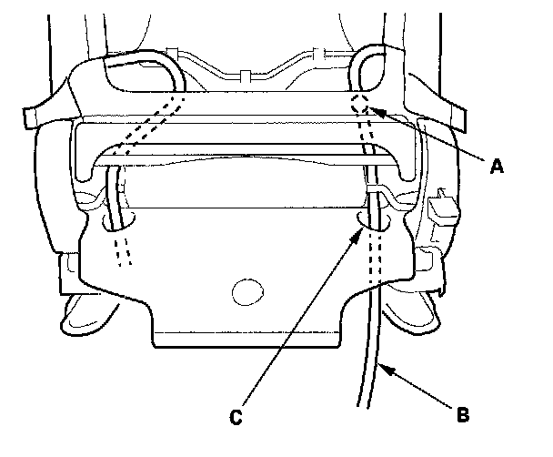
7. Detach the harness clip (A), and pull the side airbag harness (B) out through the harness hole (C) in the seat-back cover and seat frame. Passenger's seat is shown; driver's seat is similar
8. Remove the side airbag.
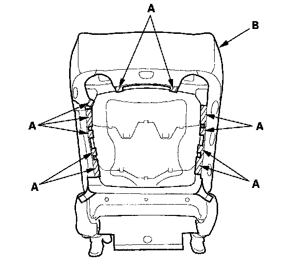
9. Release the hook strips (A), then loosen the seat-back cover (B). Driver's seat is shown; passenger's seat is similar.
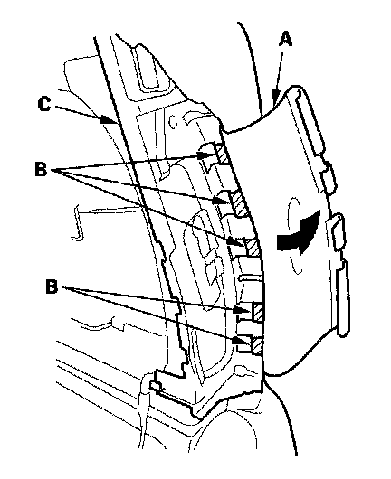
10. Turn over the reinforcing cloth (A), then release the hooks (B) from the side airbag module holder (C). Passenger's seat is shown; driver's seat is similar.
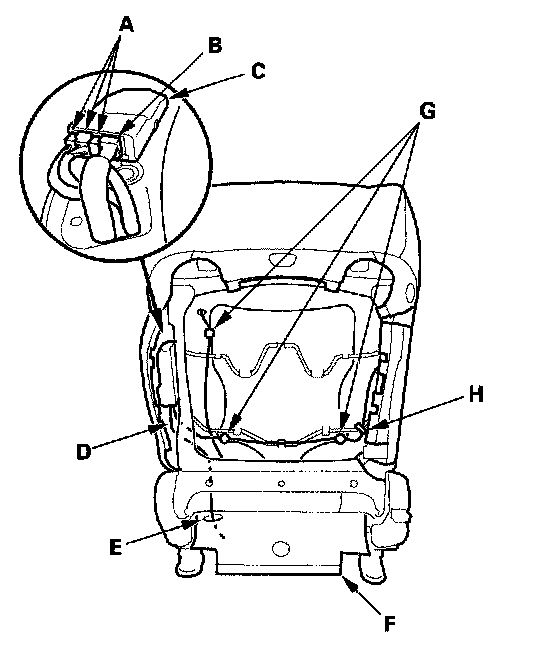
11. Passenger's seat: Disconnect the ODS sensor connectors (A) and ODS subharness connector (B) from the ODS unit (C), and pull them out through the hole in the seat frame. Pull the ODS subharness (D) out through the harness hole (E) in the seat-back cover (F). Detach the harness clips (G) and remove the wire tie (H).
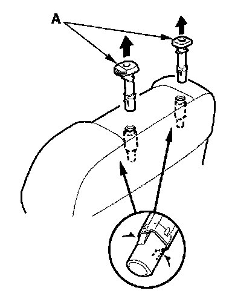
12. Pinch the tabs on the ends of the head restraint guides (A), and remove them from the seat-back.
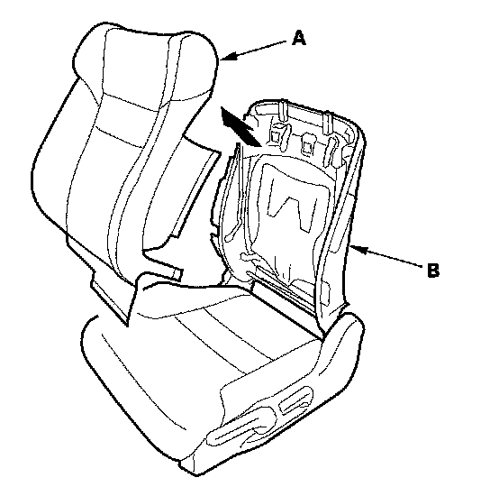
13. Remove the seat-back cover/pad (A) from the seat (B).
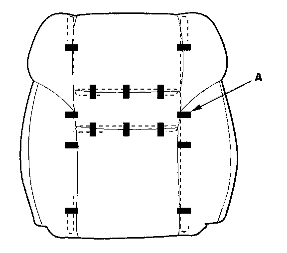
14. Pull back the edge of the seat-back cover all the way around, and release the clips (A), then remove the seat-back cover.
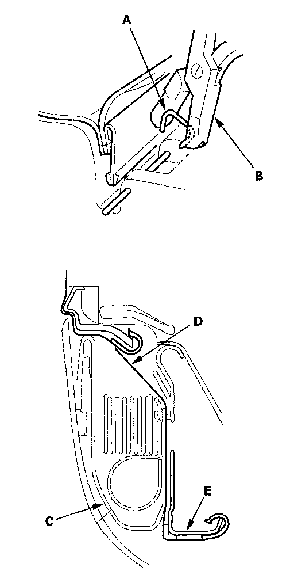
15. Install the cover in the reverse order of removal, and note these items:
- Reinitialize the ODS unit.
- To prevent wrinkles when installing a seat-back cover, make sure the material is stretched evenly over the pad before securing the clips, hooks, and hook strips.
- Replace any clips you removed with new ones (A). Install them with commercially available upholstery ring pliers (B).
- Before installing the side airbag (C), make sure the reinforcing cloth (D) is fixed on the seat-back frame (E) securely.
- Make sure the side airbag harness and ODS subharness (passenger's seat) are routed properly.
4-door
SRS components are located in this area. Review the SRS component locations and the precautions and procedures before doing repairs or service.
- Check the operation of the driver's seat position sensor after any of these actions:
- Driver's seat position sensor replacement
- Cover plate (front side of driver's seat slide rail) replacement
- Calibrate the ODS unit after any of the these actions:
- Front passenger's seat replacement (including any seat components)
- Replacement of the seat weight sensors
- After a vehicle collision
NOTE:
- Take care not to tear the seams or damage the seat covers.
- On the passenger's seat, do not touch the ODS sensor in the seat-back pad, and keep it away from oil. Oil can corrode the sensor caution it to fail.
- Put on gloves to protect your hands.
1. Remove the front seat.
2. Remove the head restraint.
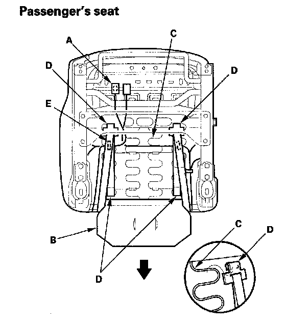
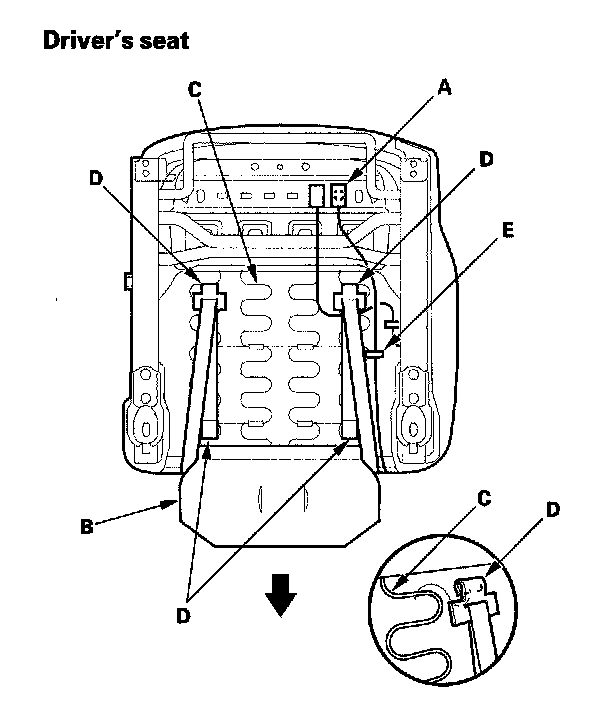
3. From under the seat cushion, detach the side airbag connector clip (A).
4. Release the slit in the seat cushion cover (B) from the seat cushion frame spring (C), then pull the cover back. Release the hooks (D) and remove the wire ties (E).
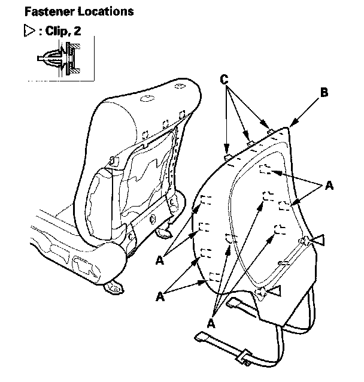
5. Detach the clips and hooks (A) by pulling the bottom of the back cover (B) back, then gently pull down the cover to release the hooks (C) from the seat frame, and remove the panel.
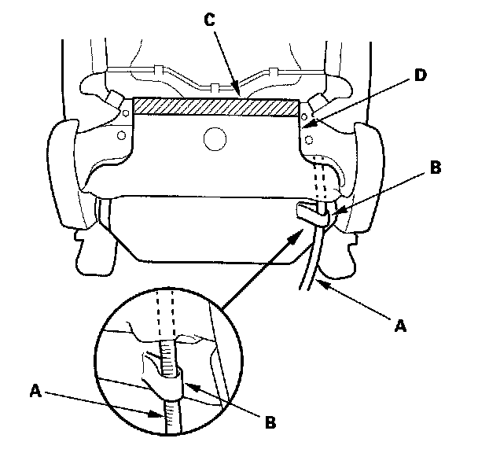
6. Pull the side airbag harness (A) out through the loop (B), and release the hook (C), then pull the seat-back cover (D) back.
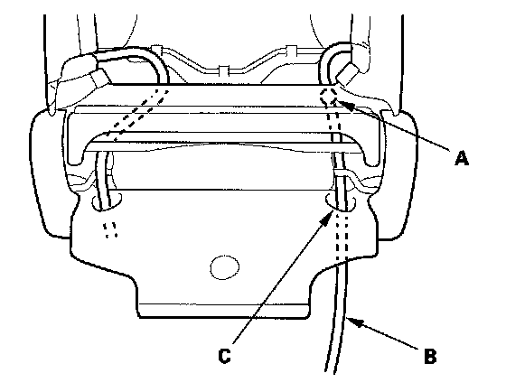
7. Detach the harness clip (A), and pull the side airbag harness (B) out through the harness hole (C) in the seat-back cover and seat frame. Passenger's seat is shown; driver's seat is similar.
8. Remove the side airbag.
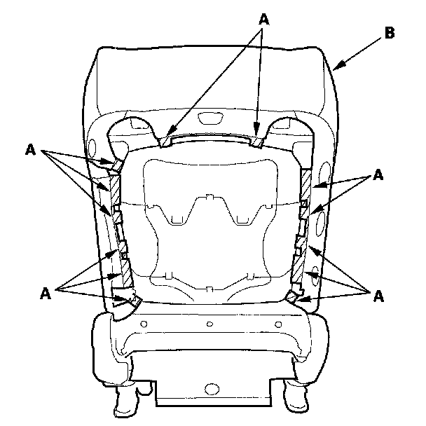
9. Release the hook strips (A), then loosen the seat-back cover (B). Driver's seat is shown; passenger's seat is similar.
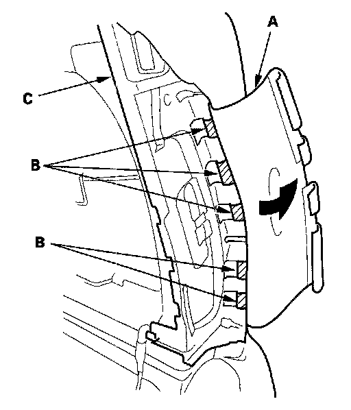
10. Turn over the reinforcing cloth (A), then release the hooks (B) from the module holder (C).
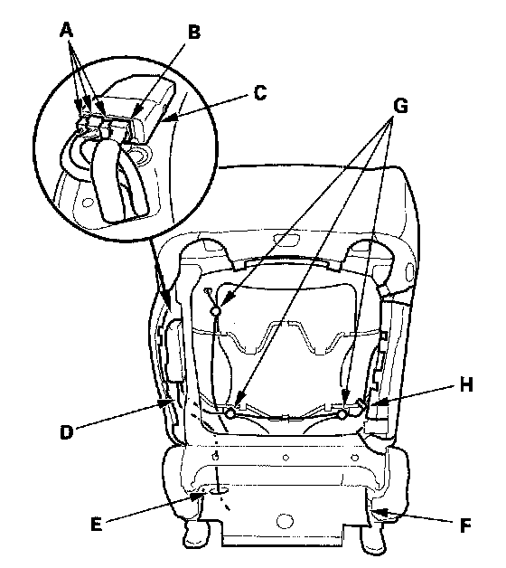
11. Passenger's seat: Disconnect the ODS sensor connectors (A) and ODS subharness connector (B) from the ODS unit (C), and pull them in through the hole in the seat frame. Pull the ODS subharness (D) out through the harness hole (E) in the seat-back cover (F). Detach the harness clips (G), and remove the wire tie (H).
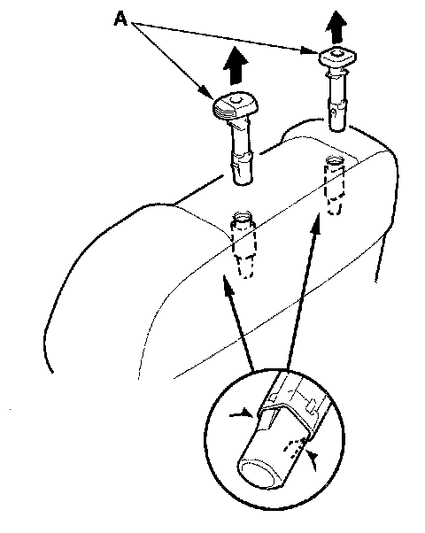
12. Pinch the tabs on the ends of the head restraint guides (A), and remove them from the seat-back.
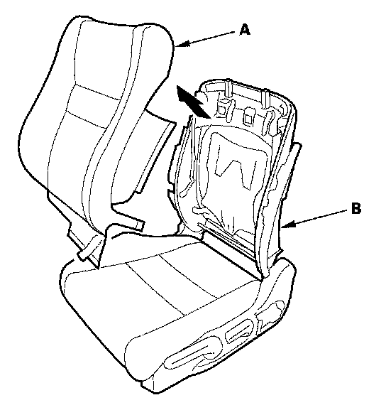
13. Remove the seat-back cover/pad (A) from the seat (B).
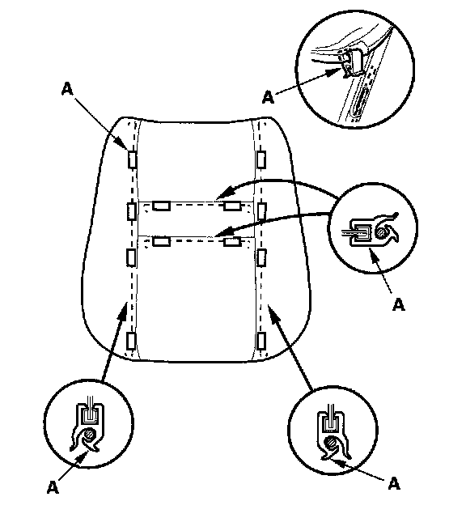
14. Except Si model: Pull back the edge of the seat-back cover all the way around, and release the clips (A), then remove the seat-back cover.
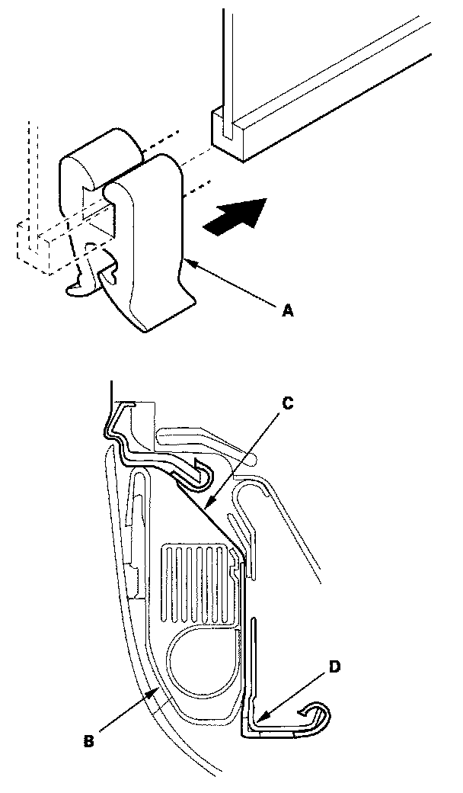
15. Except Si model: Install the cover in the reverse order of removal, and note these items:
- Reinitialize the ODS unit.
- To prevent wrinkles when installing a seat-back cover, make sure the material is stretched evenly over the pad before securing the clips, hooks, and hook strips.
- Replace any clips (A) you removed with new ones.
- Before installing the side airbag (B), make sure the reinforcing cloth (C) is fixed on the seat-back frame (D) securely.
- Make sure the side airbag harness and ODS subharness (passenger's seat) are routed properly.
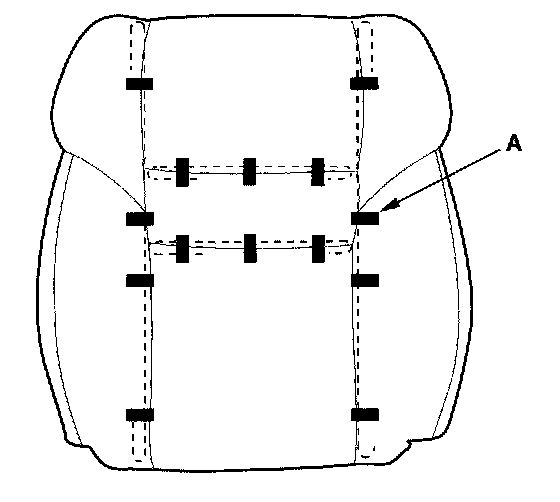
16. Si model: Pull back the edge of the seat-back cover all the way around, and release the clips (A), then remove the seat-back cover.
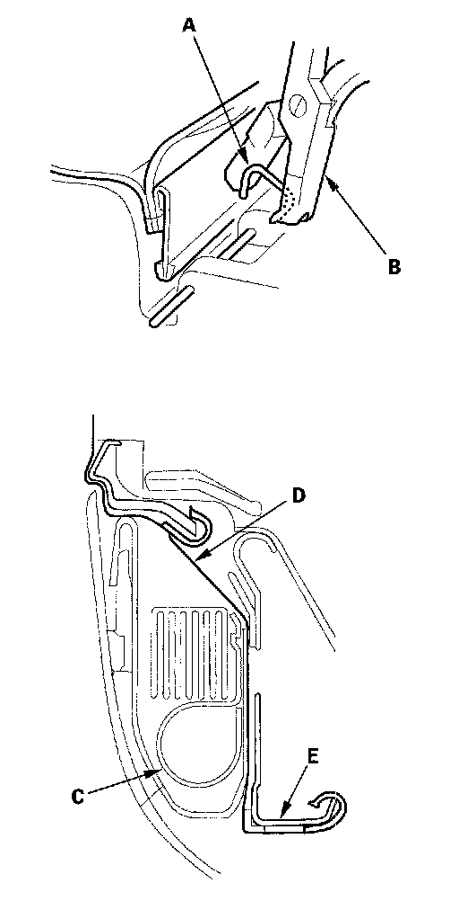
17. Si model: Install the cover in the reverse order of removal, and note these items:
- Reinitialize the ODS unit.
- To prevent wrinkles when installing a seat-back cover, make sure the material is stretched evenly over the pad before securing the clips, hooks, and hook strips.
- Replace any clips you removed with new ones (A). Install them with commercially available upholstery ring pliers (B).
- Before installing the side airbag (C), make sure the reinforcing cloth (D) is fixed on the seat-back frame (E) securely.
- Make sure the side airbag harness and ODS subharness (passenger's seat) are routed properly.